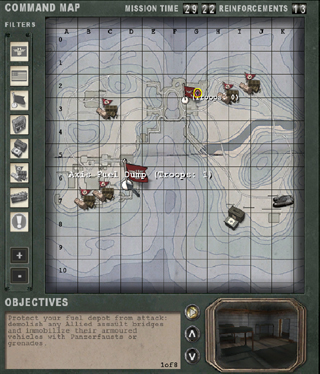

© 2003 Splash Damage, Ltd. All Rights Reserved.

| Wolfenstein: Enemy Territory Documentation © 2003 Splash Damage, Ltd. All Rights Reserved. |
|
The solution was to create a virtual camera system which could be setup to point at objectives or spawn areas throughout the map. As dynamic objectives were used for the escort-a-tank missions, the system was also extended to allow chase cameras as well.
Below is a screenshot from the Limbo menu featuring the various command map icons, filters down the right and the objective description/camera viewpoint along the bottom.
|  |
When the player cycles through the objectives with the up and down arrows the camera will change to reflect what they are looking at.
Critical objectives will make the icon pulsate slowly so players know they are important and they can find them on the command map easier.
The objective camera entity info_limbo_camera has to target another entity; otherwise Enemy Territory will not load the map. This is something to be careful of if you region compile maps. (You can add entities to compiled maps with the "-onlyents" option.)
To create a spawn room camera you will need to setup the info_limbo_camera entity to target the team_WOLF_objective entity. Also remember to give the info_limbo_camera entity a targetname so that it can be removed from the game if need be. Often forward spawn areas are removed in LMS.
For each objective in the map you will need to create an info_limbo_camera entity and target it at an info_null entity. The info_null is used as the direction the camera will be looking. The info_limbo_camera entity must also have an objective key which tells the game what camera is looking at what objective.
The final use for the info_limbo_camera entity is to follow a moving objective like for example the tank in Goldrush or Fueldump. In the map Fueldump the tank (script_mover entity) is made from various clip brushes which all the camera entities target.
At various points on the tanks journey are info_limbo_camera entities which are used to watch the tank. They all target the tank entity regardless of how far away they are from the tank initially.
As the tank (script_mover) goes past each info_limbo_camera entity, the camera viewpoint on the limbo menu focuses on the tank during its journey. The camera will pan around and watch the tank at all times.
Which ever info_limbo_camera entity the tank (script_mover) is closest to, will be used as the current camera location. With some clever placement of the info_limbo_camera entities you can create some really cool angles. In the map 'Goldrush' the tank is shown rolling over the bridge towards the market, but from the angle of someone standing in the courtyard in front of the bank.
Description Text
All the objective/map text is stored in a separate file called '<map
name>.objdata' in the 'maps' folder. This was done because some of the
objective text needed was special international characters.
The first 3 lines of the file deal with the text for Axis/Allied/Spectator teams. These lines of text are referred to as objective 0 by the info_limbo_camera entities.
Each team must have an equal amount of text descriptions for each objective in the map. The total number of objectives is still set in the map script file.
Once the objectives are completed or failed they are updated with an alpha channel image stored in 'ui/assets2' called 'stamp_complete.tga' or 'stamp_failed.tga'.
News Reel
Each map has a WAV file which is used to read a news bite introducing the map
as if from an old style newsreel. The wav file is stored in the following area:
/sound/vo/<map name>/news_<map name>.wav
All maps have a sound script file which also defines the news reel WAV file at the top. The scripts files are in the 'sound/scripts' folder and named after the map name.